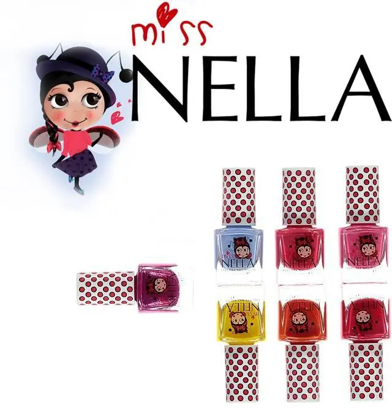
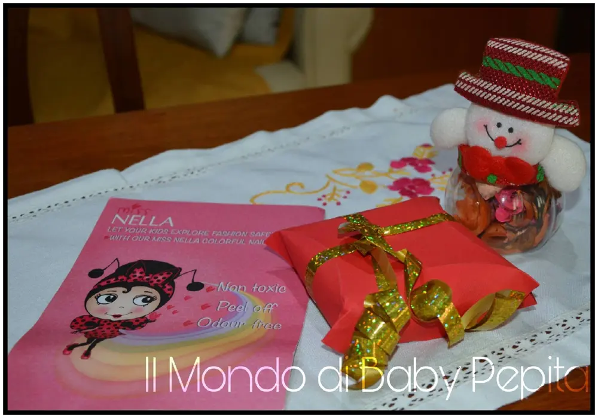
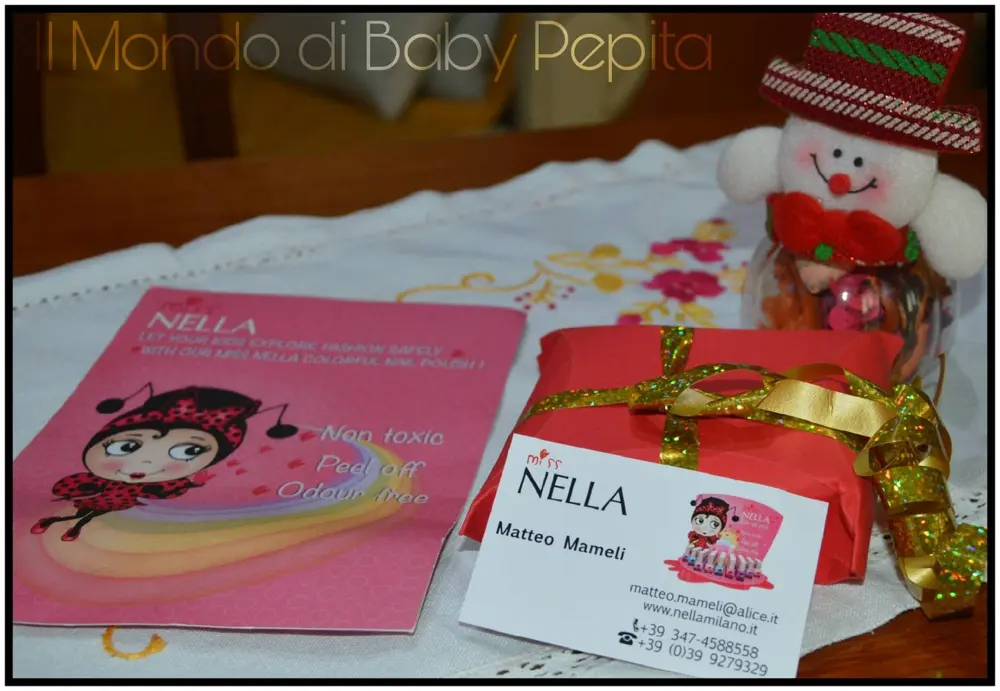
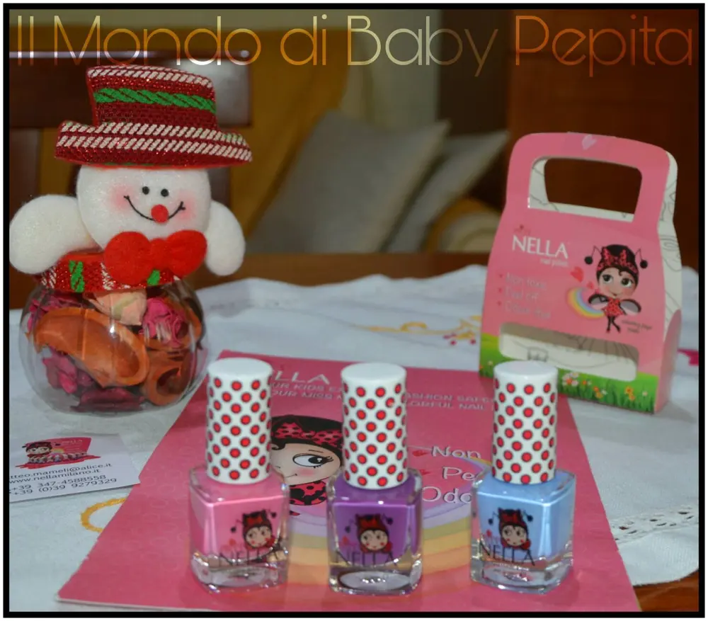
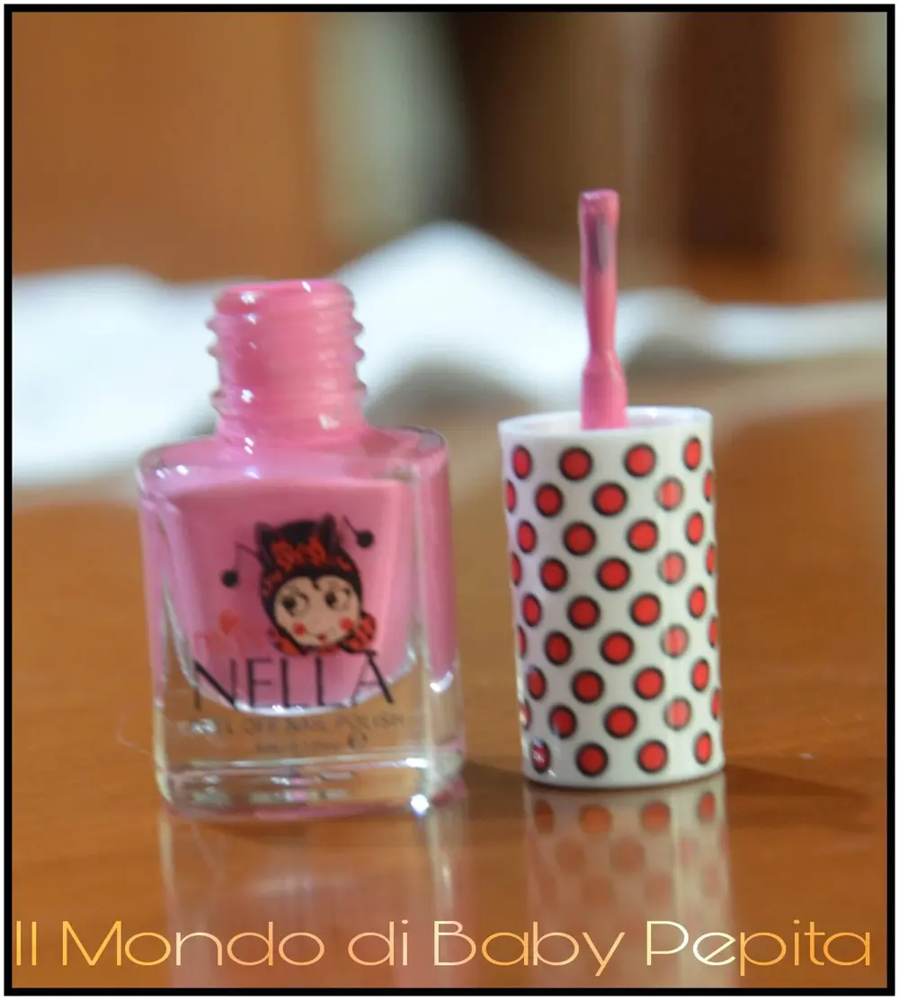
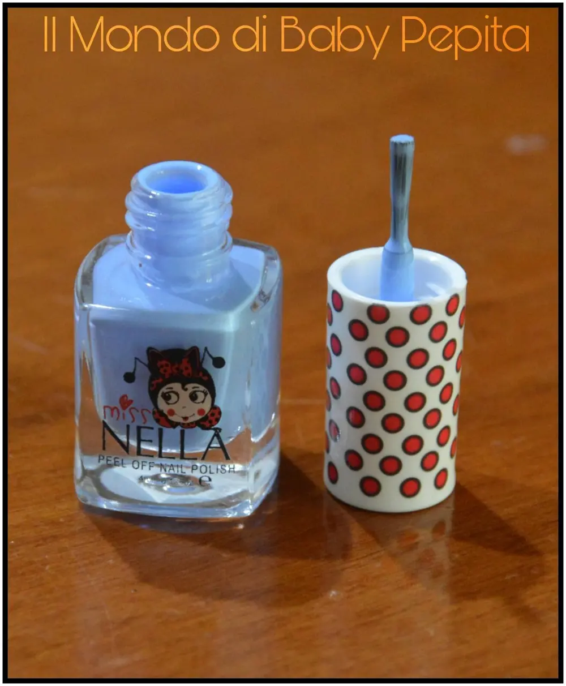
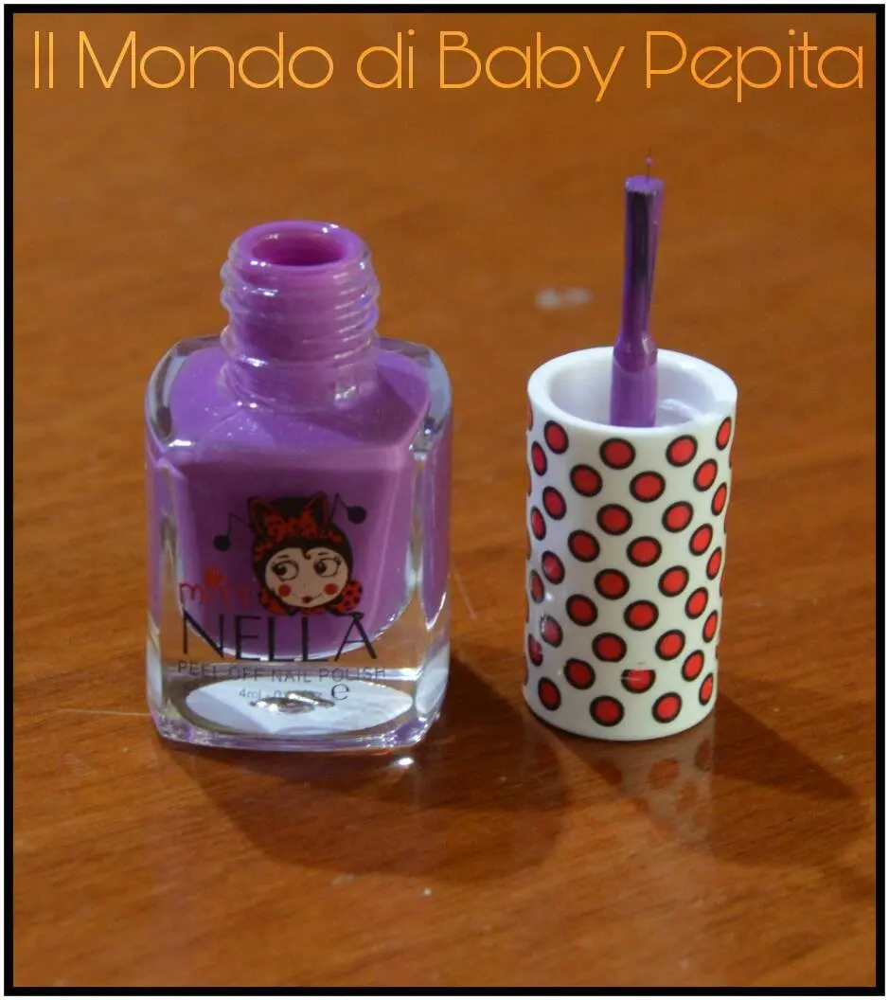
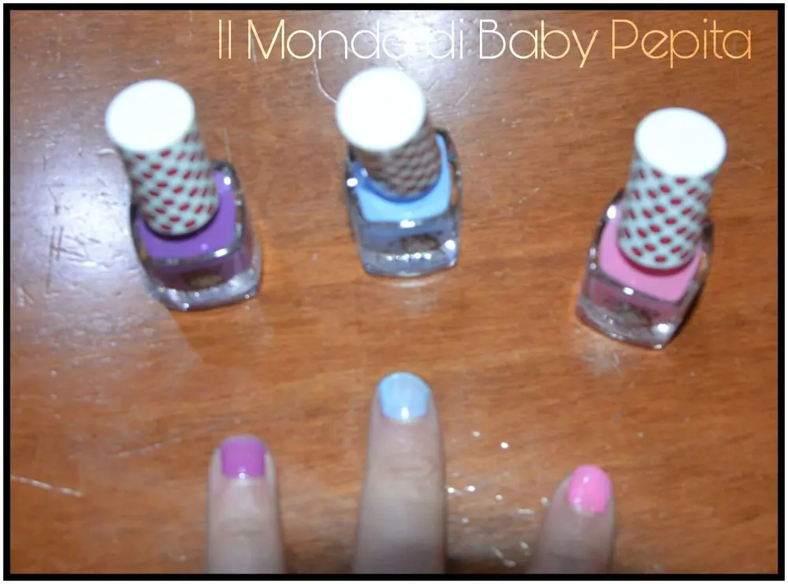

Miss Nella Milano

Oggi voglio proporvi un prodotto tutto femminile, ma per le piccole donnine, ovvero alle nostre bambine che siano figlie, nipoti, figlie di amici, cugine ecc. che iniziano ad approcciarsi al mondo beauty e alla vanità.
Sappiamo che bene o male tutte le bambine amano giocare a colorarsi le unghia, ma sappiamo anche comunque, che la maggior parte degli smalti sono nocivi per loro, in che modo?

Beh sono bambine e di conseguenza hanno sempre poca attenzione di sé proprio perché non conoscono il pericolo e spesse volte, anche con smalto tendono, per una cosa o un’altra a mettere le dita in bocca.

Nessun problema più, Miss Nella Milano ha pensato anche alle piccole donnine che giocano a fare le mamme in tutta sicurezza..
Miss NELLA permette alle tue bimbe di esplorare il mondo fashion in sicurezza! Consente alle bimbe di tutte le età (dai 3 anni in sù) di giocare a mettere lo smalto..
Sono smalti ad acqua completamente atossico e non contiene nessuna sostanza dannosa.. Cosa ancora più importante è che si toglie senza acetone..

A me è stata gentilmente inviata questa confezione a borsetta troppo carina, ottima idea regalo per le vostre principesse.

I colori all'interno sono:
- CHEEKY BUNNY
- BLUE BELL
- SWEET LAVENDER



Questa confezione costa 20,00 € ovviamente potete scegliere voi stessi i colori tra la vasta gamma di tonalità anche glitterate che Miss Nella mette a disposizione.

Oltre a questa linea baby Miss Nella è specializzata anche e soprattutto in smalti effetto gel e semi permanenti per adulte.
Io vi consiglio di visitare il loro sito Miss Nella Milano. .Il loro facebook è: Smalti Nella Milano. .
Per quanto riguarda me seguitemi:FACEBBOKINSTAGRAMTWITTERYOUTUBE